[UPD] Zotero hacks: reliably setup unlimited storage for you personal academic library
About this tutorial
In summer 2024, Zotero had a major update to version 7. The update affected some of the setup routines that I outlined ages ago in the Zotero hacks post. The recipe laid out in that old post helped me painlessly update, move, and maintain my Zotero library for more than a decade; and judging by feedback it did so for many dozens of my friends, colleagues, and just occasional people who found the tutorial useful. It became easily the most viewed post in my blog. Now, with the recent update of Zotero, I decided to update the tutorial as well, but I’m keeping the old post untouched in case someone needs the routine that worked reliably for ages.
The essence of the tutorial stays the same – it shows how to organize a personal academic library of unlimited size for free. Here I only slightly update some steps of the setup, refresh the screenshots, and provide occasional comments from 20241.
1 Hello from 2024! Throughout the post, I will add notes with comments on and additions to some of the 5 years old statements. Disclaimer: they aged really well.

A brief (and hopefully unnecessary to you) intro to bibliographic managers
Bibliographic manager is a life saver in everyday academic life. I suffer almost physical pain just thinking about colleagues who for some reason never started using one – all those excel spreadsheets with favorite citations, messy folders with PDFs, constant hours lost for the joy-killing task of manual reference list formatting. Once you start using a reference manager this all becomes a happily forgotten nightmare.
I tend to think of bibliographic metadata as LEGO.
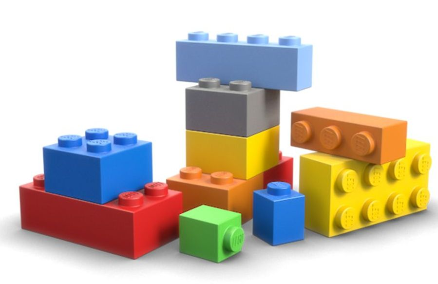
For each paper (book chapter / pre-print / R package) we have a number of metadata pieces – title, authors, date published, etc. These are the LEGO blocks. For different bibliographic styles we just need to re-shuffle those blocks inserting various commas, semicolons, and quotation marks.
Bibliographic manager keeps track of all the LEGO blocks and knows (learns easily) how to compose proper citation styles out of them. All we need is to download a specific journal’s citation style. There are more than six thousand bibliographic styles! And this is my #1 argument against the conspiracy ideas of some centralized power that rules our world =)

Why Zotero?
There are dozens of bibliographic managers out there (see a comparative table). Some of them are free, the others require paid subscriptions. Probably, the most popular two are Zotero and Mendeley. Both are free to use and make money by offering cloud storage to sync PDFs of the papers. Yet, both give some limited storage for free – Zotero gives 300MB, and Mendeley gives 2GB.2
2 Mendeley, a bibliographic manager provided freely by Elsevier, used to be a very popular alternative to Zotero, and thus the previous version of tutorial used is for comparison. Yet, as if to illustrate the point I’m making here, the proprietary program was simply killed the program that was used daily by thousands of academics.
Why do I choose and recommend Zotero then? Because it’s fairly easy to set-up Zotero so that the free 300MB are only used to sync metadata (which in practice means almost infinite storage), and the PDFs are synced separately using a cloud solution of one’s choice (I use Google Drive). It’s the main set-up hack that I’m showing in this blog post. There is no similar hack for Mendeley, and with them at some point one is bound to pay for extra storage.
Another consideration in favor of Zotero is that it’s an open-source program with strong community and outspoken commitment to stay free forever, while Mendeley is an Elsevier for-profit product. Academic community knows a lot about Elsevier in particular 3 and for-profit products in general. Here the story of Academia.edu is very indicative – have a look at this Forbes piece. As a career-long decision I’m confident in choosing Zotero. Free open-source software is a safe choice for your academic workflow for ages, even decades. Just my personal example: I started my academic journey in 2012 and was lucky enough to immediately adopt Zotero. In the 12 years since, I had 10 different primary machines running Windows, Linux, and MacOS. Throughout these years and across all these different environments, my library was safely and reliably synced and developed continuously and smoothly without a single collapse.
3 Unfortunately to many of those who chose to use Mendeley at some point and was reluctant to switch, Elsevier first discontinued support of the mobile apps for Mendeley, both Android and iOS, in 2021; and in 2023 the corporation decided to sunset the whole project. Just like that. Here is the best illustration why it’s so much more reasonable and safe choice to choose open-source community driven projects.
Finally, an example of how strong Zotero community is. Once I figured out there the style repository does not have a style for Demographic Research, one of the best journals in demography. I’ve opened a request on Zotero forum and in two days the style was created.
Prerequisites
Download and install Zotero. It’s cross-platform and works smoothly with various systems, even when the same database is sycned in parallel on machines with different operation systems. I’ve used
win+linuxandwin+mac– no sync problems ever.From the same download page go to install Zotero Connector, a browser extension that helps to retrieve bibliographic metadata.
Create an account on Zotero website. It will be used later on to sync the database of bibliographic metadata.
Download and install the two plugins we’ll need – Zotero Attanger4 (organizes the database of PDFs) and Better BibTeX (exports the collections of papers to
.bibto later use with Quarto). The plugins for Zotero are.xpiarchives. Direct link to just download the.xpifiles: Zotero Attanger & Better BibTeX. To install the plugins open Zotero and clickTools --> Plugins. A separate window forPlugins managerwill pop-up.
4 Here is one of the main differences of the current tutorial from the previous version. Zotfile, the brilliant plugin that helped us for ages, is no longer actively maintained. Thus, we are using a new plugin called Zotero Attanger, which just ports the crucial functionality of Zotfile to Zotero 7.
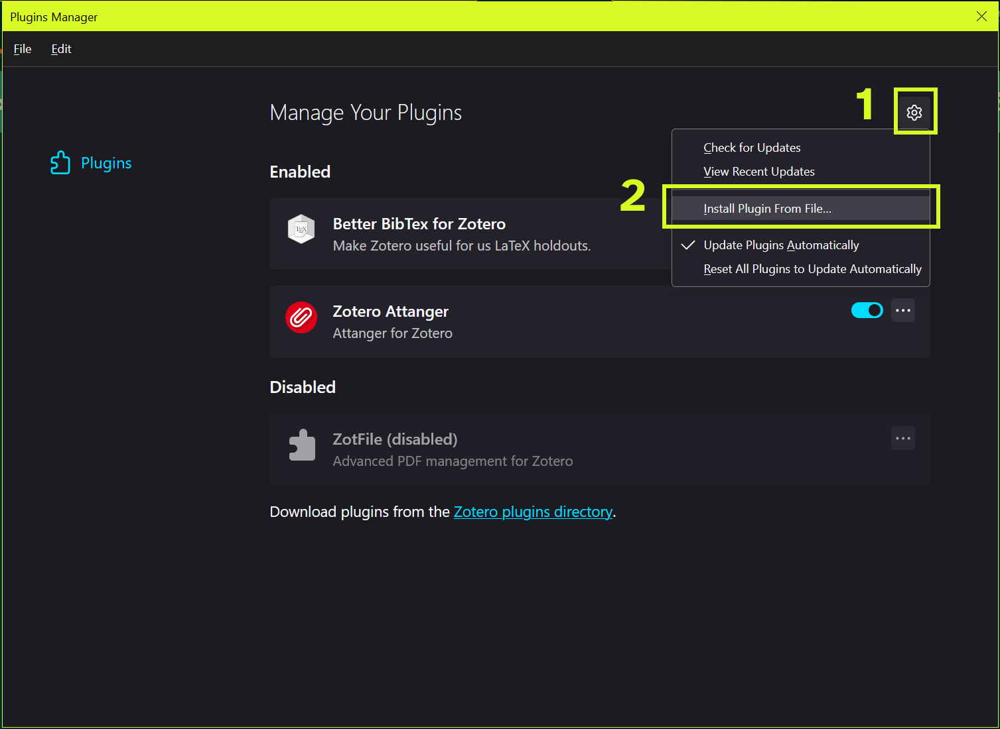
There we need to click the options gear button and select Install Plugin From File option. Finally navigate to the .xpi file and install. Zotero will ask to restart, please do.
We are ready to go through the setup step-by-step.
Zotero preferences
Let’s walk though Zotero Settings, one tab at a time. To see and edit them go to Edit --> Settings. A separate window with several tabs pops up.
General
I only uncheck the option to create automatic web page snapshots which I find not so useful compared with all the cluttering effect of all those multiple small files needed to replicate an html page locally. 5
5 Also note the added new option to have a dark interface. For years this was one of the main requested features, and it used to be solved via a specialized plugin Zotero Night.
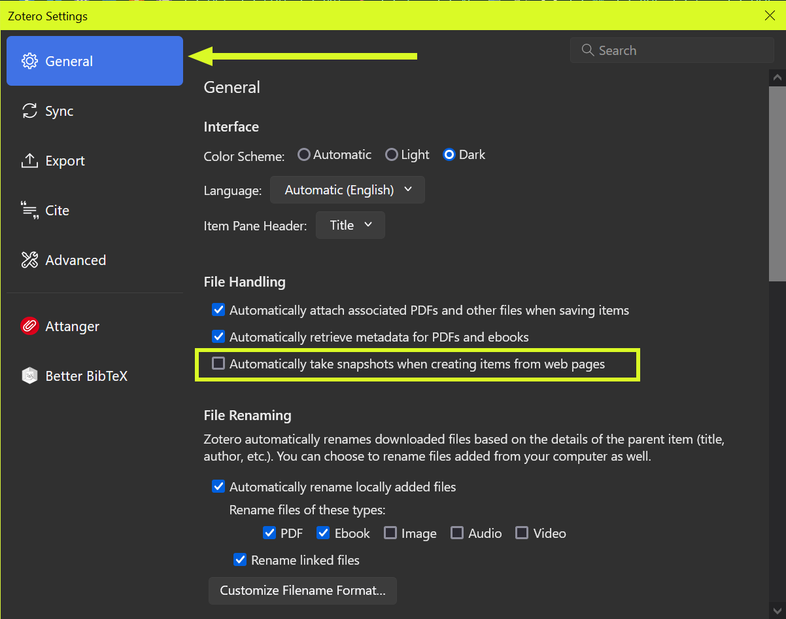
Another important option here is File Renaming – to define the rules for renaming the attached PDF files. But we are going to deal with it at the very end, after tuning the Attanger plugin settings.
Sync
Here we need to specify the account details to sync our database. It is important to uncheck the option Sync full-text content otherwise the 300MB storage will quickly get filled. We’ll have the solution for full text a bit later.
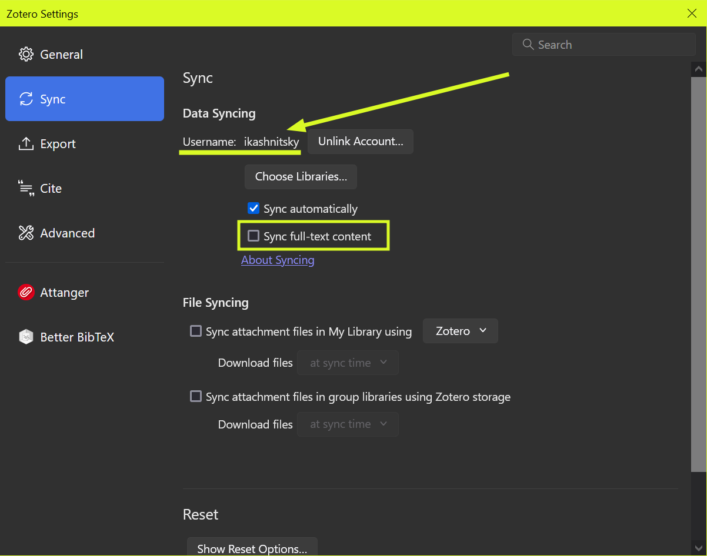
Export
Choose the style for quick export using Shift+Ctrl+C shortcut.
Cite
Citation styles stored locally. One nice feature here is the Get additional styles link which brings an integrated selection from the whole Zotero Styles Database. Styles can also be installed from local .csl files, for that press the + button. Don’t miss the Word Processors options at the bottom of this tab. There we can get the plugins that integrate Zotero to Microsoft Word and Libre Office.
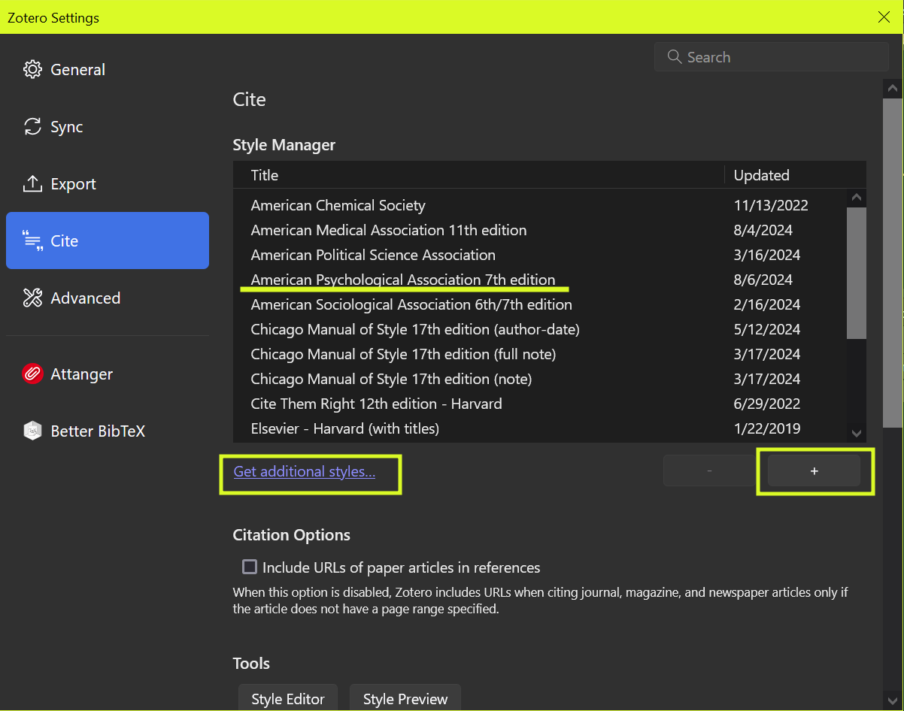
Advanced
Here we are most interested in the sub-tab Files and Folders. This is the most important step to separate the storage of metadata and files.
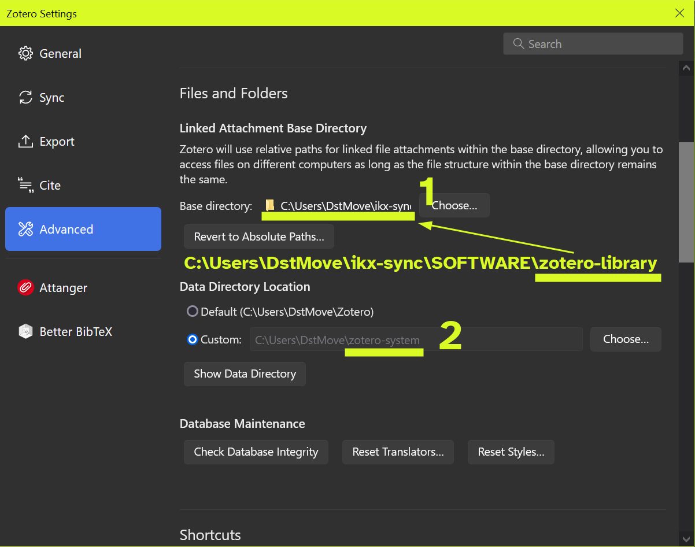
The first path should lead to a directory which stores the full-text PDFs, I call it zotero-library. This directory should be somewhere in the part of the local file system that is synced. In my case it’s the directory named ikx-sync, which I sync with Google Drive. The second path leads to the system files of Zotero, I call it zotero-system. This directory should be placed somewhere in the non-synced part of the local file system. It will be updated by the native Zotero sync, and it’s better if those system files are not overwritten by any external sync software.
Attanger
Next we need to setup Zotero Attanger. This extension helps to rename PDFs according to pre-defined rules and store them in a hierarchical database with meaningful names of the sub-directories. There are 4 important steps here (annotated in the screenshot below).
We need to define two paths. The first is the default location of the files downloaded by your browser. This option tells Attanger where to look for recently downloaded PDFs to process when you import a paper from the publisher’s website (recall that earlier we installed Zotero Connector). The second path leads to the local directory created for the full-text PDFs, the one that I named zotero-library and which is synced with an external cloud solution of our choice.
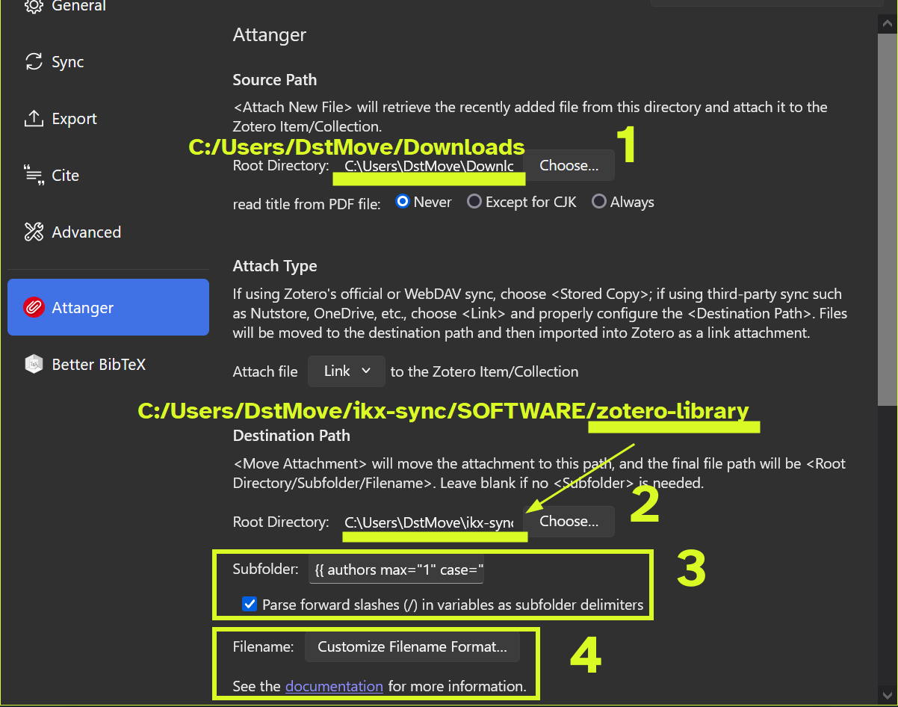
To navigate easier in this database of PDFs use the option Subfolder. Here again we have a wide choice of the ways to define the rules to name the sub-directories. Click the documentation link to learn the naming options. I choose to simply have a separate folder for each first author. In my case the option is {{ authors max="1" case="lower" }}. The advantage of this convention is that I only reed to remember the first author – and I can easily find all the PDFs in the same folder, synced securely to my Google Drive, I can easily find any paper in seconds
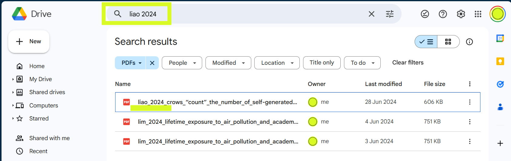
…and even from my phone on the go.
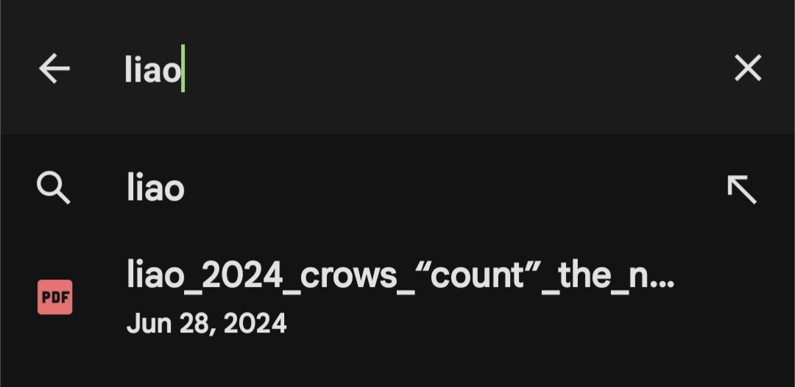
The Filename option defines the rules for renaming the attached PDF files. Clicking the button Customize Filename Format brings us to the Filename Format sub-menu of the General Settings tab. Here we set the template according to the same Zotero naming rules, click documentation link to learn the naming options.
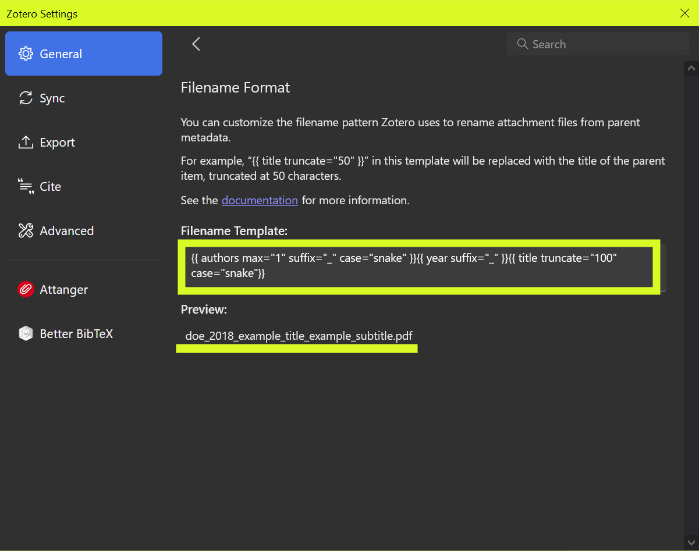
Again, the options are nearly infinite. My choice is to have attached PDFs named according to their FIRST AUTHOR then YEAR then TITLE, everything in snake_case, which yields file names like kashnitsky_2021_unequally_ageing_regions_of_europe.pdf (again an example for my paper in Population Studies). The code to get such name is: {{ authors max="1" suffix="_" case="snake" }}{{ year suffix="_" }}{{ title truncate="100" case="snake"}}.
{kind=link}
And here comes the kill feature of the proper setup – paths to the full texts are stored in the metadata itself. This allows seamless transition between the machines (or even a simultaneous usage across several machines) as long as the relative file paths structure starting from the base file directory zotero-library stays unchanged.
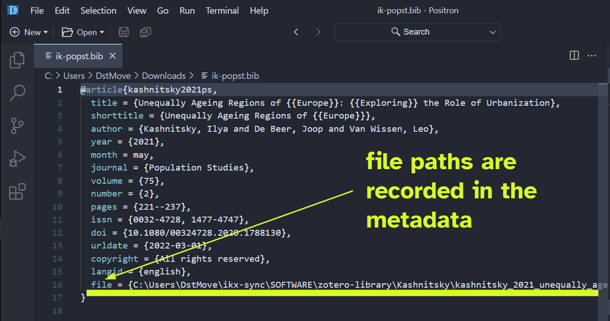
When I need to restore my whole database of academic papers on another machine, I just go through the steps in this tutorial. As long as the data base of system metadata (zotero-system) is synced by Zotero and a correct link to a PDFs storage (zotero-library) is specified, Zotero will recognize all the relative paths to the files, and will restore the whole library. This setup also makes it possible to have the same continuously synced library on multiple machines.
Better BibTeX
This tab appears after we install the Better BibTeX extension. The plugin is needed to export the bibliographic library, in whole or some specific collections (aka folders), as plain .bib text files, which are later used while writing academic papers with LaTeX, rmarkdown, Quarto, or any other text based editor. `
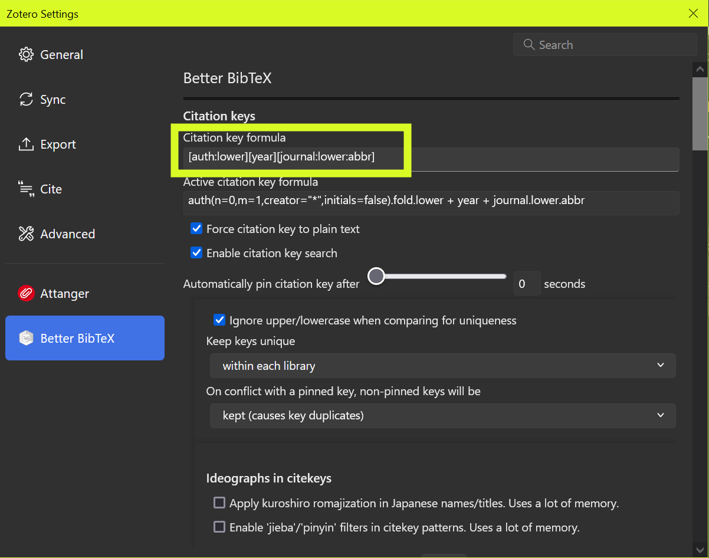
The most important option here is to define the rules for creating citation keys. There are almost infinite number of ways one can define these keys (check the manual). My personal choice is [auth:lower][year][journal:lower:abbr], which means that a key consists of the first author’s name, publication year, and the first letters abbreviation of the journal’s title, everything in lower case. For example, the key for one of my papers published in Population Studies is kashnitsky2021ps.
Once Better BibTeX is installed and fine-tuned, exporting to .bib is easily achieved via the context menu – right click on a collection (or the whole library, but this would be slow and take a long whole) and choose Export Collection.
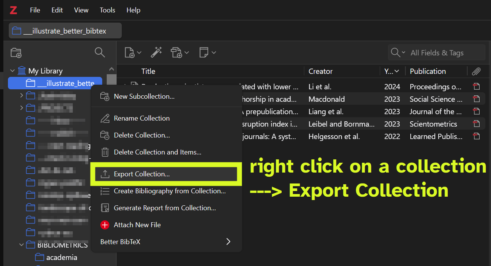
In the next small window choose the parameters of the export. There are multiple formats to choose from, yet for our purposes the default Better BibTeX is prefect. Then there are several other options to choose.
Keep Updated would monitor the exported Zotero collection and will update/overwrite the exported .bib file whenever it sees any changes. This is very handy, but may be quite a burden for you machine, use with caution.
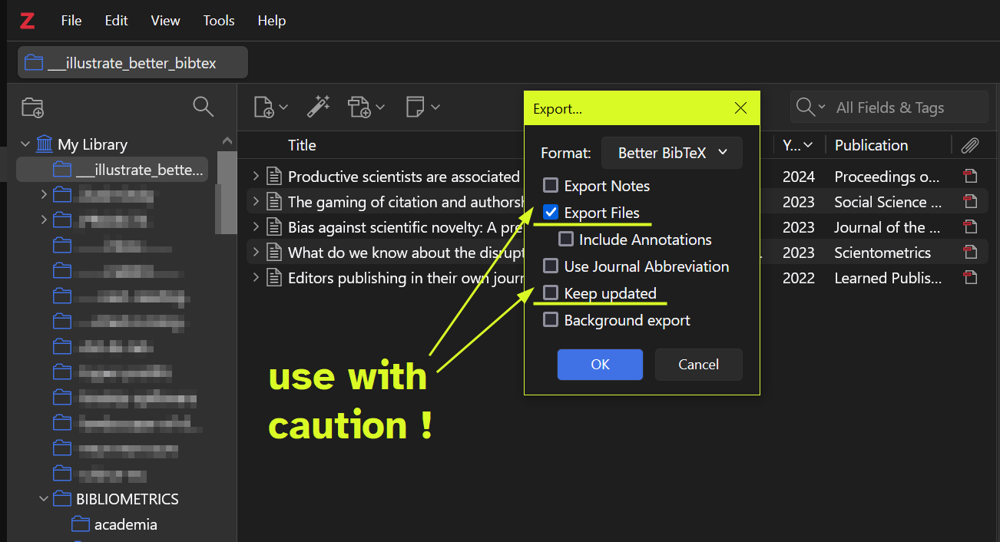
Export Files allows to export PDFs together with the metadata. This may come super handy if you want to quickly share a collection of articles with full texts. If this option is checked, the output will be a folder with a .bib text file with the papers’ metadata and an inset folder files with the actual PDFs.
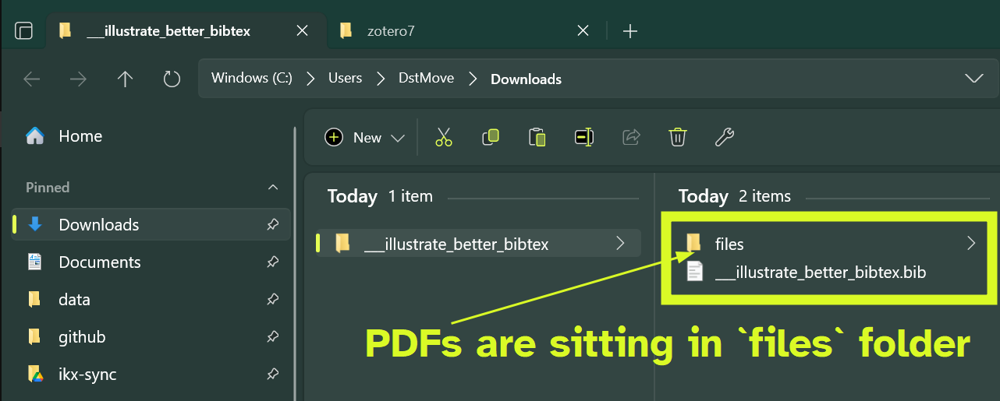
The nice feature of Better BibTeX is that it keeps the relative paths to PDFs written down in the metadata itself. This allows importing the whole collection back to Zotero (or another bibliographic manager) with full texts carried along.
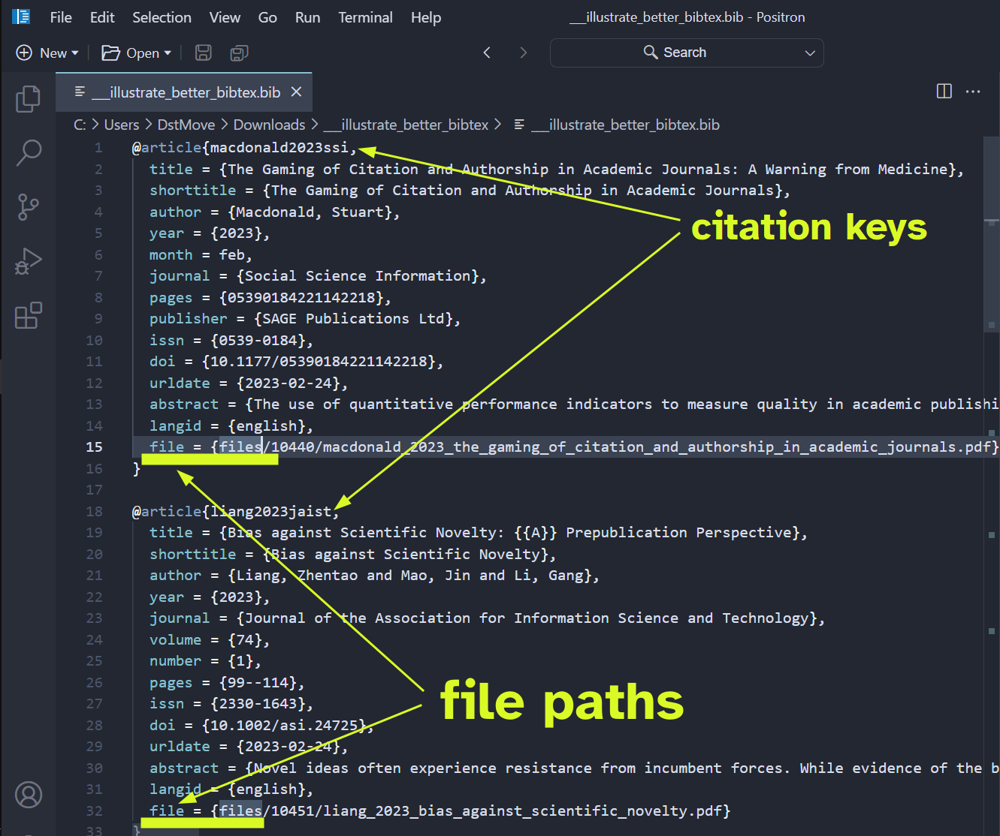
Better BibTeX takes care of citation keys, the option that we tuned first in this section. Citation keys are unique identifiers of papers (or other metadata entries) in the .bib collection. We use the later in Quarto (or LaTeX, rmarkdowm, etc) to actually cite papers. For further hints on using .bib files in authoring academic texts, I suggest checking out the beautiful reference materials of Quarto.
Conclusions and a final remark on Zotero
This tutorial offers a time-proven recipe for tuning a personal Zotero library so that everything is synced seamlessly across multiple devices. Once set up properly, you will enjoy an unlimited storage of PDFs via any side cloud solution of your chouce coupled with the highly reliable and free native sync of metadata form Zotero. As a free open-source project Zotero is not aimed at generating profits, yet subscription fees are essential for the development and sustainability of this amazing project. Personal tiers may feel a bit hefty for individuals, especially students, but if you can convince your institutions to use Zotero and get an institutional subscription, find more info here.